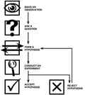

Daryush "Roosh" Valizadeh created ROK in October 2012. You can visit his blog at RooshV.com or follow him on Twitter and Facebook.


Looking back at my thirteen years in the American public school system and four more years at the University Of Maryland, I have come to the realization that it was an utter waste. Nothing I do today which serves me in work, women, life, or leisure can be traced back to what I was taught in school. I must therefore conclude that being educated in America was the most harmful event in my life.
My parents pushed me hard into attending university. I didn’t question their well-intentioned urgings because I had no idea what else to do. I eventually picked microbiology out of a black hat, which served me for six years after college until quitting for good. On my visit to the States last year, the topic of my education came up in a conversation with my father. I remarked how I would have been better off not going to college.
“But university did help you,” he said. “It taught you how to think.”
I didn’t question his rebuttal at the time, but now I’m certain he was incorrect, because my education didn’t even teach me how to read or write.
I couldn’t read properly until I was about 24 or 25 years old; I simply did not have the ability to properly parse and analyze difficult texts, and my abominable SAT verbal scores, which were below average, could verify that to you. I had trouble understanding basic assigned literature like Catcher In The Rye or The Grapes Of Wrath. My brain didn’t care for understanding the symbolism, motifs, or even the plot.
I also could not write. Well, I could write for the teacher who ordered me to hit a certain word count, but my grades in English classes only proved that I was averagely literate and able to convey someone else’s ideas without introducing too many grammatical errors, but not much more. A 19th century London schoolboy had more writing skill than I did when I was legally allowed to gamble and drink alcohol.
Anything else in school I developed competency on—calculus, physics, biology—was mechanical and based on stenciled learning that any average mind could handle with enough prodding. Either I copied the instructor’s methods for solving a problem or memorized facts and equations as if I was a robot. Up to my graduation, I had not developed one original idea or sentence of writing that is worth exposing to you right now. You can even mention specific classes I took in college and I will be unable to relay one fact I learned from them, in spite of doing well enough on the exams. If I ever write my autobiography upon old age, I can skip the first 22 years of life when it came to my intellectual progress and not lose a speck of importance. My education taught me nothing I couldn’t have achieved on my own with a basic tutor, and if anything, it greatly inhibited my development.
Did the American educational system fail me, or did I possess a sluggish mind that chose not to bloom until gray hairs started appearing on my beard? Maybe a bit of both, but I look at what my younger brothers are studying in school (one is in middle school and the other in college), and I can only shake my head at how ill-prepared they will be for a world that is frightfully changing ever year. For my youngest brother, school is essentially a babysitter that teaches him a week’s worth of the most elementary math and science spread out to nine soul-numbing months under the guidance of a feminist headmaster, while my older brother is more fearful of bad grades and punishment from dad than being an apex achiever in a field that will give him self-sufficiency for life. They’re both screwed, but at least they won’t be alone—their classmates are floating in the same rickety lifeboats as them.
Actually there is one thing I learned in school that I use every week. It is my default approach to seeking truth and understanding this complex Earthly world. It is the scientific method:

The scientific method, which I remember learning in the 9th grade, gave me everything I needed to solve problems on my own in all areas of life. The first time I used it outside of a school setting was at 22 years of age when I wanted to improve my sex life. I made the observation that a certain type of man was getting women and so I made hypotheses and changed my behavior to conduct real-life experiments that resulted in abundant fornication.
When my observations on women or relationships could not be understood, I sought the consul of books and other men. My book Bang is essentially a lab report from studying the American female Homo sapiens. This personal enthusiasm for experimentation has stayed with me since then, and I will always seek real-life confirmation of whatever behavior I urge upon myself or others.
But besides the scientific method, it was all for nothing. I say that without exaggeration—not a single lecture, factoid, graph, or equation I’ve learned in school has been marginally useful in my life since graduating 14 years ago. Even when I was employed as a microbiologist, more than 90% of what I used at work was learned through practical on-the-job training. I’m confident that at 15 years of age I could have done the same job as at 25, especially since I was essentially a glorified assembly line worker in the manner at which I conducted experiments handed down to me by my superiors.
What percentage of men in the past completed a formal education? Compare that with today’s perverse obsession to educate everyone using a one-size-fits-all model that jams facts into people’s ears as if force feeding someone on hunger strike. It’s no surprise that the only thing that accomplishes is creating adults who are good at basic trivia but not at solving problems or generating useful ideas. You can not educate thought into someone. You can not create a great thinker or an intellectual out of thin air. Education destroys original thought and muddles great minds, and mainly excels at creating zombies who march in step with all the other automatons after being indoctrinated to respect authority and, lately, Marxist ideas. Education has devolved into social brainwashing happy time for Westerners (and slut training centers for girls) and not much more.
If I have a son, he will receive a classical education from a dedicated tutor at no more than two hours a day. The rest of his time will be spent exploring nature, music, athletics, woodworking, art, and of course, the scientific method. The goal is not to fill his head with information and facts in the hopes that one day it will aid him, but to give him the tools and mental framework to tackle any problem he will face in life while allowing him to develop passions that make it all worth living. My education didn’t do that for me and for many other men, and what a regrettable waste it has been for us.
This article was originally published on Roosh V.
Read Next: 7 Things I Would Tell My Teenage Self